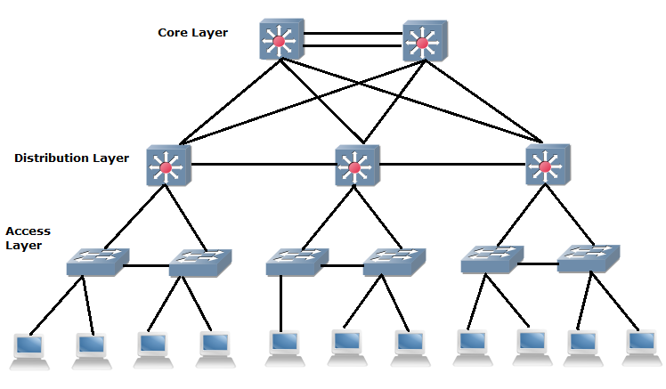

- A router connects different networks in order to create a path to transmit packets.
- Packets must go through routers to get to their destination.
- Packets can go through many different routers before reaching their final destination
- Redundancy ensures that the connections are fully functioning and are uninterupted
Redundancy is plays a significant role in functionality. Within the network there are many paths between different routers so that if something were to disrupt one path such as "a racoon eating a path" the connection would still be able to function
- A packet contains a message that travels through networks/routers
- Packets contain smaller chunks of messages. This is because when sending a message, especially a larger file, an error during transmission could disrupt the entire message and cut it.
- Packets were designed to prevent these types of error by splitting the message into smaller pieces
- Once the reciever recieves all the packets they can reorder them to form the message even if the packets arrived in the wrong order.